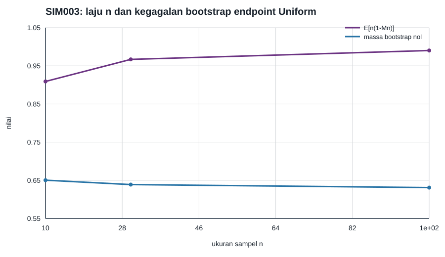

Distribusi seragam pada batas dukungan: laju nonreguler dan kegagalan bootstrap biasa
Misalkan \(X_i\stackrel{\mathrm{iid}}{\sim}\operatorname{Uniform}(0,\theta)\) dengan \(\theta=1\), dan \(M_n=X_{(n)}\). Dukungan bergantung pada parameter, jadi kerangka fungsi kemungkinan reguler tidak berlaku; lihat Fungsi kemungkinan nonreguler: empat mekanisme kegagalan. Dari distribusi eksak diperoleh \(P\{n(1-M_n)\le y\}=1-(1-y/n)^n\) untuk \(0\le y\le n\), yang menuju \(1-e^{-y}\). Karena itu jarak maksimum sampel dari batas dukungan memiliki laju \(n\), bukan \(\sqrt n\).
Rancangan yang dapat direproduksi
- Benih generator PCG64:
140003. - Replikasi per ukuran sampel: 160.000.
- Ukuran sampel: \(n\in\{10,30,100\}\).
- Kuantil 95% empiris dibandingkan dengan nilai eksak \(n\{1-0{,}05^{1/n}\}\), bukan dengan satu ambang asimtotik untuk semua \(n\).
Rataan \(n(1-M_n)\) adalah 0,909071; 0,966904; dan 0,990172. Kuantil 95% empiris adalah 2,593076; 2,844298; dan 2,956510, masing-masing berjarak kurang dari 0,08 dari nilai eksaknya. Sementara itu, \(E\{\sqrt n(1-M_n)\}\) turun dari 0,287474 ke 0,099017: besaran dengan penskalaan akar-\(n\) justru konvergen ke nol.
Mengapa bootstrap empiris biasa gagal
Dalam sampel bootstrap berukuran \(n\), pengamatan maksimum pada sampel asal tidak terpilih dengan peluang \((1-1/n)^n\). Jadi maksimum bootstrap sama persis dengan \(M_n\) dengan peluang \(1-(1-1/n)^n\), yang menuju \(1-e^{-1}\approx0{,}6321\). Distribusi bootstrap bersyarat mempunyai atom besar di nol untuk celah \(M_n-M_n^*\), sedangkan distribusi limit sasarannya bersifat kontinu. Dalam simulasi, kode membangkitkan sampel asal, menarik \(n\) indeks bootstrap, dan memeriksa apakah indeks pengamatan maksimum pada sampel asal terpilih. Simulasi menghasilkan massa 0,650250; 0,638775; dan 0,630850, sesuai peluang eksak masing-masing.

Data tersedia dalam CSV SIM003.